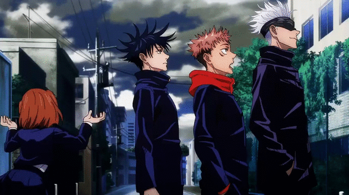
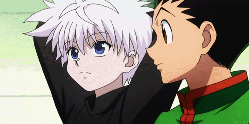

2021 Animes You Need To Look Out For
Attack on titan is without a doubt the most anticipated and loved anime across the globe,
but sadly its story is coming to an end. "The Final Season" has just came to an end, however,
a suprise part 2 has been announced to be released sometime in the future. Check out the trailer of
his anime below.
Attack on Titan

Jujitsu Kaisen's Anime was released in late 2020 and fans of anime gravitated towards
the story of Itadori Yuuji. This anime has gotten alot of attention and loads
of great feedback. From the graphics, pace of the story, and the overall quality
of the anime, many say that this might just be the best new anime out right now.
Check out the trailer of this anime below.
Jujitsu Kaisen
Dr. Stone unique's take with science and technology in its story has made
watching it very interesting. Dr. Stone is different than the other main Animes
you might be thinking of but it is very promising. Check out the trailer of
his anime below.
Dr. Stone

Demon Slayer is another anime that fans have gravitated to because of its
engaging storyline along with the graphics and overall great pace. We dont want to give
too much away but....The animation/graphics especially have made this anime one of
the best new anime's out right now. Check out the trailer of this anime below.
Demon Slayer

Hunter x Hunter is technically not "new" but I put it on this list because
it is one of my personal favorite animes that still is relevant today. Most people, including myself
gravitated towards the characters in the show and their attitude, abilities and storylines. A great anime
to watch if you havent already. Check out the trailer of this anime below.
Hunter x Hunter
One Piece is another one of my favorite animes and probably the first anime I've seen since it is
so old. It began in 1999, and is still going with over 900 episodes. Growing up watching this anime,
and going to school and talking about it with friends used to be so fun. Great anime to watch if you have time
and want to engage in a unforgettable story. Check out the trailer of this anime below.
One Piece